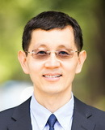

| 教授照片 |
相關資訊 |
 |
賴韋志 (教授兼系主任) Lai, Wei-Chih
- 分機：63931
- 辦公室：綜合大樓四樓48413室
- E-mail：weilai@ncku.edu.tw
- 實驗室：固態照明實驗室 (ext.63906#1062,2071)
- 專長領域：高效率藍光發光二極體製程技術
- 暱稱：電子學大師
|
 |
郭宗枋 (特聘教授) Guo, Tzung-Fang
- 分機：63914
- 辦公室：綜合大樓四樓48403室
- E-mail：guotf@ncku.edu.tw
- 實驗室：有機電激發光元件 (ext.63906#2021、63911#101)
- 專長領域：共軛有機高分子電激發光元件
- 暱稱：TF郭、老郭、半導體大師
|
|
周維揚 (特聘教授) Chou, Wei-Yang
- 分機：63912
- 辦公室：綜合大樓四樓48415室
- E-mail：weiyang@ncku.edu.tw
- 實驗室：有機光電元件實驗室 (ext.63906#1081,1051)
- 專長領域：有機薄膜電晶體
- 暱稱：揪吉、老周、微陽、無慈悲的維揚
|
|  |
張世慧 (教授) Chang, Shih-Hui
- 分機：63920
- 辦公室：綜合大樓四樓48411室
- E-mail：gilbert@ncku.edu.tw
- 實驗室：虛擬光電 (ext.63911#206,209、63906#2131)
- 專長領域：有限差分時域法光電模擬
- 暱稱：活佛、大世慧什麼都會
- 愛徒：簡偉廷
|
|
|